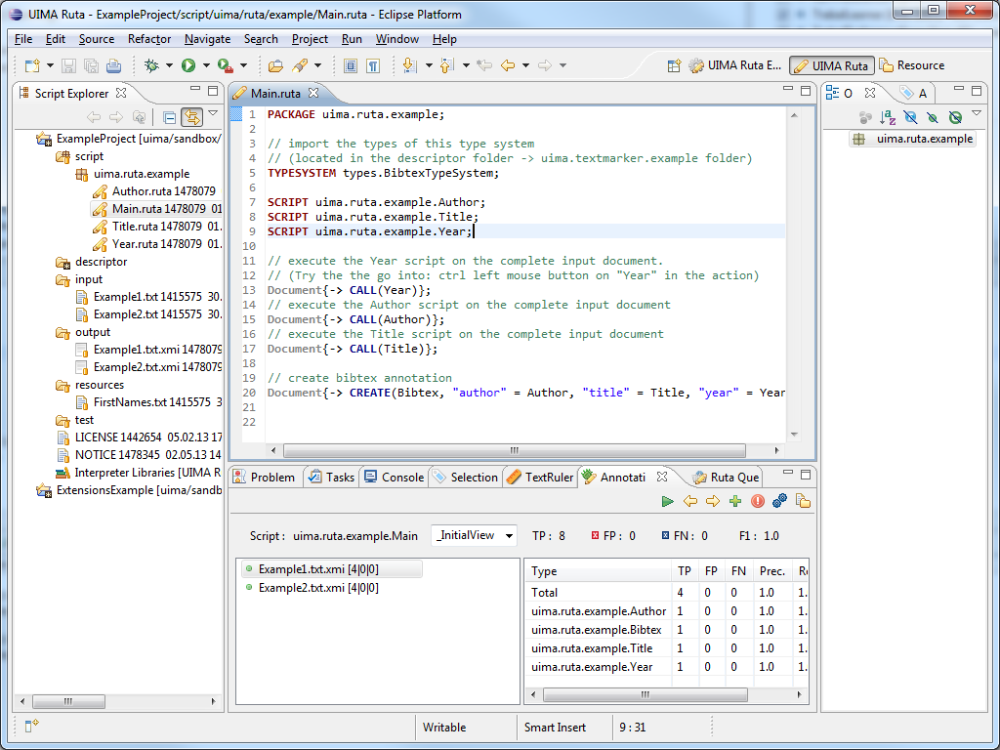

This Apache UIMA™ component consists of two major parts: An Analysis Engine, which interprets and executes the rule-based scripting language, and the Eclipse-based tooling (Workbench), which provides various support for developing rules.
This page only contains a short overview. A more detailed introduction can be found in the documentation or in the slides of the tutorial in conjunction with GSCL 2013.
The UIMA Ruta Workbench can be installed via our Eclipse update site: https://downloads.apache.org/uima/eclipse-update-site-v3/
The UIMA Ruta Workbench 3.5.1 is tested with Eclipse 2023-09 (older versions may still work).
The UIMA Ruta language is an imperative rule language extended with scripting elements. A rule defines a pattern of annotations with additional conditions. If this pattern applies, then the actions of the rule are performed on the matched annotations. A rule is composed of a sequence of rule elements and a rule element essentially consists of four parts: A matching condition, an optional quantifier, a list of conditions and a list of actions. The matching condition is typically a type of an annotation by which the rule element matches on the covered text of one of those annotations. The quantifier specifies, whether it is necessary that the rule element successfully matches and how often the rule element may match. The list of conditions specifies additional constraints that the matched text or annotations need to fulfill. The list of actions defines the consequences of the rule and often creates new annotations or modifies existing annotations.
The following example rule consists of three rule elements. The first one (ANY...) matches on every token, which has a covered text that occurs in a word lists, named MonthsList.
The second rule element (PERIOD?) is optional and does not need to be fulfilled, which is indicated by the quantifier ?. The last rule element (NUM...) matches
on numbers that fulfill the regular expression REGEXP(".{2,4}" and are therefore at least two characters to a maximum of four characters long.
If this rule successfully matches on a text passage, then its three actions are executed: An annotation of the type Month is created for the first rule element,
an annotation of the type Year is created for the last rule element and an annotation of the type Date
is created for the span of all three rule elements. If the word list contains the correct entries, then this rule matches on strings like
Dec. 2004, July 85 or 11.2008 and creates the corresponding annotations.
ANY{INLIST(MonthsList) -> MARK(Month), MARK(Date,1,3)}
PERIOD? NUM{REGEXP(".{2,4}") -> MARK(Year)};
Here is a short overview of additional features of the rule language:
The UIMA Ruta Workbench was created to facilitate all steps in creating Analysis Engines based on the UIMA Ruta language. Here is a short overview of included features:
Editing support: The full-featured editor for the UIMA Ruta language provides syntax and semantic highlighting, syntax checking, context-sensitive auto-completion, template-based completion, open declaration and more.
Rule Explanation: Each step in the matching process can be explained: This includes how often a rule was applied, which condition was not fulfilled, or by which rule a specific annotation was created. Additionally, profile information about the runtime performance can be accessed.
Automatic Validation: UIMA Ruta scripts can automatically validated against a set of annotated documents (F1 score, test-driven development) and even against unlabeled documents (constraint-driven evaluation).
Rule learning: The supervised learning algorithms of the included TextRuler framework are able to induce rules and, therefore, enable semi-automatic development of rule-based components.
Query: Rules can be used as query statements in order to investigate annotated documents.
